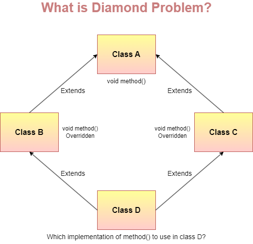

[Java] 인터페이스와 추상 클래스 알아보기
인터페이스와 추상 클래스의 차이
인터페이스
인터페이스란, 클래스와 유사하지만, 동작의 집합을 나타내는데 주로 사용되는 참조 타입입니다.
전역 정적 상수(인터페이스에 선언된 변수는 기본적으로 public static final임), 메서드 선언(추상 메서드), 디폴트 메서드, 정적 메서드 및 중첩 인터페이스만 포함할 수 있습니다.
인스턴스화 될 수 없으며, 클래스에 의해 구현(implements)되거나 인터페이스에 의해 상속(extends)될 수 있습니다.
Java 8 이후로는 static, default 메서드를 지원하며, Java 9 이후로는 private 메서드를 지원합니다.
- 추가로, 클래스의 static 메서드와 달리, 인터페이스의 static 메서드는 상속되지 않습니다.
default 메서드 중복
public interface A {
default String printline() { ... }
}
public interface B {
default String printline() { ... }
}
public class C implements A, B {
...
}
한 클래스가 여러 인터페이스를 구현할 때, 동일한 이름의 default 메서드가 존재할 수 있습니다.
이 때, 다중 인터페이스 상속으로 인한 충돌(다이아몬드 문제)이 발생해 코드가 컴파일 되지 않습니다.
이를 해결하려면, 해당 디폴트 메서드를 재정의해, 어떤 인터페이스의 디폴트 메서드를 호출할 지 명시적으로 알려주어야 합니다.
public class C implements A, B {
@Override
public String printline() {
// A 인터페이스의 메서드를 호출
A.super.printline();
// A, B 인터페이스의 메서드 모두 호출할 수도 있습니다.
B.super.printline();
}
}
private 메서드
Java 9부터 인터페이스에 private 메서드를 추가할 수 있게 되었습니다.
이는 정적/비정적 메서드로 구현할 수 있으며, public static 메서드에서 private static 메서드를 호출하는 등의 용도로 사용할 수 있습니다.
public interface Foo {
static void buzz() {
System.out.print("Hello");
staticBaz();
}
private static void staticBaz() {
System.out.println(" static world!");
}
}
이를 통해 코드 중복을 줄이고, 로직을 캡슐화해 인터페이스를 구현하는 클래스로 부터 세부 사항을 숨길 수 있습니다.
추상 클래스
추상 클래스란, abstract 키워드와 함께 선언된 클래스를 말합니다.
추상 메서드를 포함할 수 있으며, 인스턴스화 될 수 없지만 상속이 가능합니다.
일반 클래스와 같이 필드, 메서드에 대해 접근 제한자에 대한 제한이 없습니다.
추상 메서드?
abstract 키워드와 함께, 구현부 없이 선언된 메서드를 말합니다.
abstract void draw();
만약 클래스가 추상 메서드를 포함하는 경우, 반드시 추상 클래스로 선언되어야 합니다.
- 인터페이스 내부에서
default또는static으로 선언되지 않은 메서드는 암묵적으로추상 메서드이기 때문에,abstract키워드를 굳이 명시하지 않습니다.
상속
추상 클래스가 상속된 경우, 자식 클래스는 부모의 모든 추상 메서드에 대한 구현을 제공해야 합니다.
- 그러지 않는다면, 자식 클래스 역시
추상 클래스로 선언되어야 합니다.
생성자?
추상 클래스는 인스턴스화 될 수 없지만, 생성자는 가질 수 있습니다.
일반 클래스 처럼, 추상 클래스에 생성자를 선언하지 않으면 컴파일러가 기본 생성자를 만들어주거나 또는 직접 기본 생성자를 정의할 수 있습니다.
이렇게 만들어진 생성자는 자식 클래스의 생성자에서 super()를 통해 호출할 수 있습니다.
이를 활용하면 자식 클래스에서 수정할 수 없도록 하고 싶은 값에 대해 초기화를 할 수 있습니다.
public abstract class Car {
private int distance;
// private 생성자 (접근 불가)
private Car(int distance) {
this.distance = distance;
}
// Car의 기본 생성자
// 모든 자식 클래스의 생성자들이 호출되기 전, 이 생성자를 호출하기 때문에
// Car의 distance 값은 0으로 초기화 될것임이 보장됨.
public Car() {
this(0);
System.out.println("Car default constructor");
}
}
차이점
인터페이스와 추상 클래스 모두 인스턴스화 될 수 없고, 구현을 포함하거나 포함하지 않는(추상 메서드) 메서드들을 보유할 수 있다는 점에서 유사한 점이 많습니다.
다만, 추상 클래스에서는 static 또는 final이 아닌 필드 값을 선언할 수 있습니다.
또한, public/protected/private로 선언된 구체 메서드를 선언할 수 있습니다.
구체 메서드(concrete method): 완전한 구현을 포함하며, 자식 클래스에서 재정의 가능한 메서드. 즉,추상 메서드가 아닌 메서드
반면, 인터페이스에서는 모든 필드가 public static final이어야 하며, 모든 메서드는 public 이어야 합니다.
또한, 클래스는 추상 클래스든 일반 클래스든 하나만 상속할 수 있지만, 인터페이스를 구현하는데는 제한이 없습니다.
어떤걸 써야 할까?
추상 클래스를 써야할 때
- 관련된 여러 클래스 간 코드를 공유 해야할 때
- 추상 클래스를 상속할 클래스에 공통 메서드/필드가 많거나,
public이외의 접근 제한자가 필요한 경우 static또는final이 어난 필드를 선언해야 할 때, 해당 필드를 접근/수정할 수 있는 메서드를 정의할 수 있음
인터페이스를 써야할 때
- 관련 없는 클래스에서 인터페이스를 구현할 것으로 예상 될 때
- ex)
Cloneable,Comparable과 같은 인터페이스들은 관련이 없는 클래스들에서 구현되고 있음.
- ex)
- 특정 자료형의 동작을 명세하고 싶지만, 구현에 대해서는 신경쓰지 않는 경우
- 타입의 다중 상속을 활용하고 싶은 경우
예시
추상 클래스
대표적인 추상 클래스의 활용 예시는 Collection Framework 내부에 존재하는 Abstract 컬렉션(AbstractMap, AbstractList, AbstractSet 등)이 있습니다.
해당 클래스들의 하위 클래스들은 Abstract 컬렉션이 정의하는 메서드들(get, put, isEmpty 등)을 공유합니다.
인터페이스
대표적인 인터페이스의 활용 예시는 Cloneable, Serializable, Map<K, V> 등이 있습니다.
예시로 이들을 구현하는 HashMap을 보면, 이 클래스의 인스턴스가 clone()을 통해 복제할 수 있으며, 직렬화 할 수 있고, Map에 기대되는 기능들을 가지고 있음을 예상할 수 있습니다.
- 또한,
Map<K, V>의 경우,merge,forEach와 같은 디폴트 메서드를 갖고 있어, 해당 인터페이스를 구현한 오래된 클래스들을 자동적으로 개선했습니다.
왜 클래스는 단일 상속만 가능한데, 인터페이스는 2개 이상 구현이 가능할까?
상속관계에서 발생할 수 있는 다이아몬드 문제(또는 마름모 문제) 때문에 단일 상속만 가능합니다.

출처: How does Java provide support for multiple inheritance indirectly? | by Bhawana Gaur | Medium
만약 두 개 이상의 클래스를 상속할 수 있게 했다면, 위 그림처럼 자식 클래스는 동일한 시그니처를 갖는 메서드 2개를 물려받게 됩니다.
이후 자식 클래스에서 해당 메서드를 호출한다면, 둘 중 어느 메서드를 호출하겠다는 것인지 알 수 없는 상황이 발생합니다.
이러한 문제를 피하고자, Java에서는 하나의 클래스만 상속할 수 있도록 제한을 두었습니다. #
인터페이스에는 구현 없이, 메서드에 대한 명세만 존재하기 때문에 인터페이스 간 메서드 명세가 중복되어도 이러한 문제가 발생하지 않아 다중 구현이 가능합니다.
- 다만, 디폴트 메서드가 등장한 이후, 앞서 설명한 것 처럼 다중 상속 문제가 발생할 수 있게 되었습니다.
참고
- Interfaces (The Java™ Tutorials > Learning the Java Language > Interfaces and Inheritance) (oracle.com)
- Abstract Methods and Classes (The Java™ Tutorials > Learning the Java Language > Interfaces and Inheritance) (oracle.com)
- Constructors in Java Abstract Classes | Baeldung
- Java Extend Multiple Classes - Javatpoint
- Multiple Inheritance of State, Implementation, and Type (The Java™ Tutorials > Learning the Java Language > Interfaces and Inheritance) (oracle.com)
- Private Methods in Java Interfaces | Baeldung
- Difference between Abstract Class and Interface in Java - GeeksforGeeks
- Static and Default Methods in Interfaces in Java | Baeldung